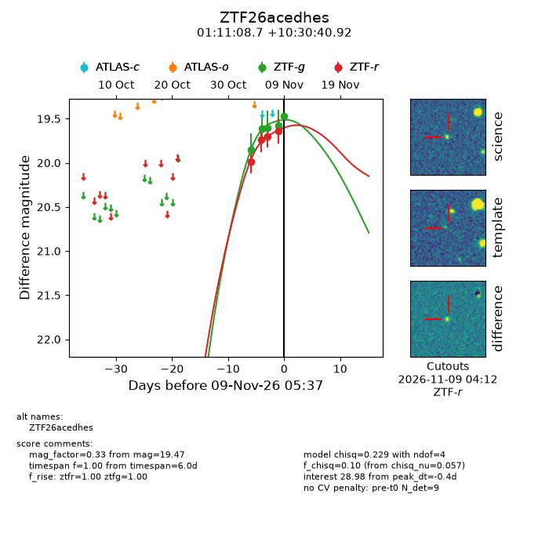
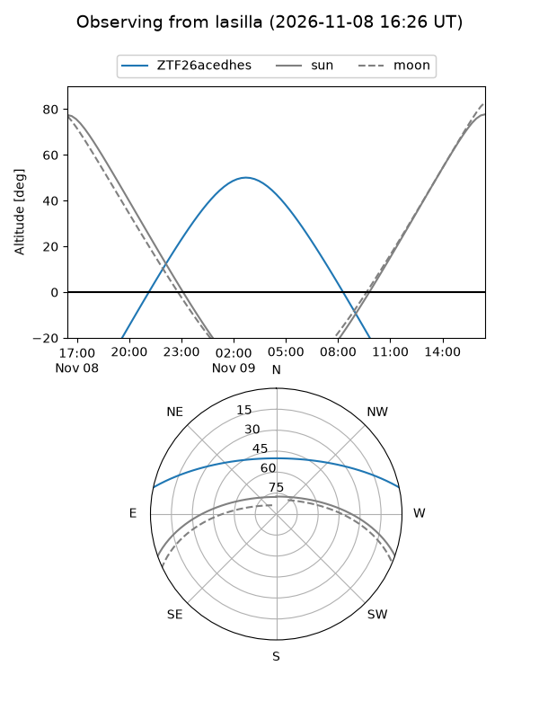
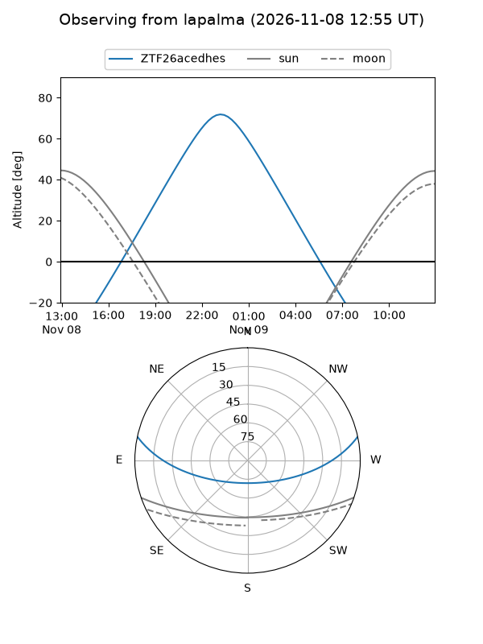
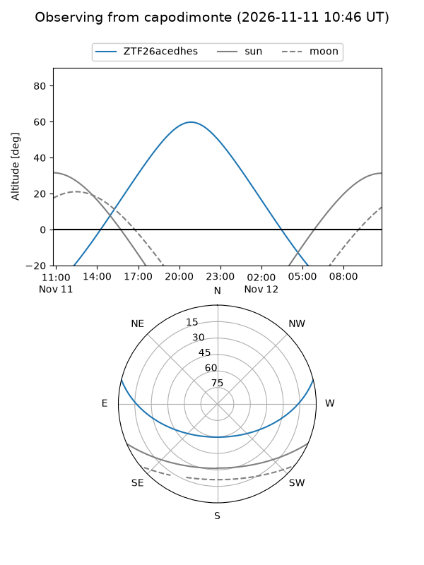
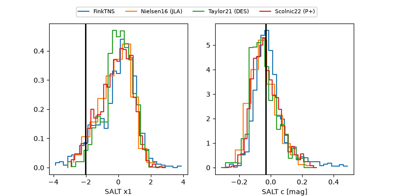

ZTF26acedhes
Target ZTF26acedhes at 2026-11-09 05:40
Aliases and brokers:
FINK-ZTF: ztf.fink-portal.org/ZTF26acedhes
Lasair-ZTF: lasair-ztf.lsst.ac.uk/objects/ZTF26acedhes
ALeRCE-ZTF: alerce.online/object/ZTF26acedhes
Direct TNS query: direct search
alt names
ZTF26acedhes (ztf,fink_ztf)
Coordinates:
equatorial (ra, dec) = 17.7863,+10.51137
equatorial (HMS+DMS) = 01:11:08.70,+10:30:40.92
galactic (l, b) = (130.8255,-52.05808)
Flags:
peak dt: -0.4
Photometry:
last ztfg=19.47, ztfr=19.64
5 ztfg, 4 ztfr detections
Lightcurve

Visibility



Additional plots
